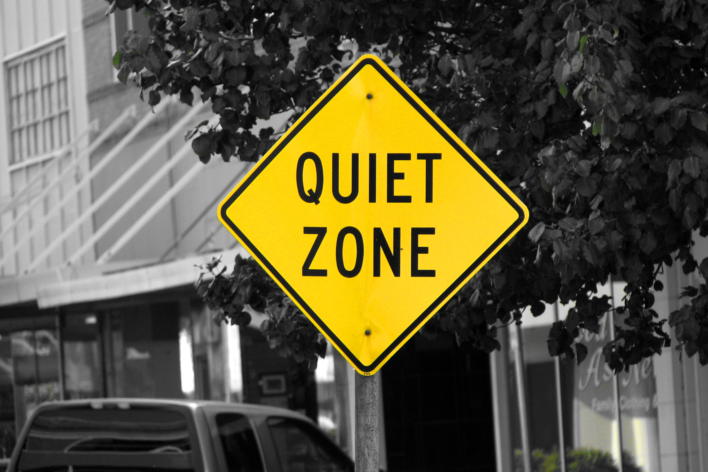
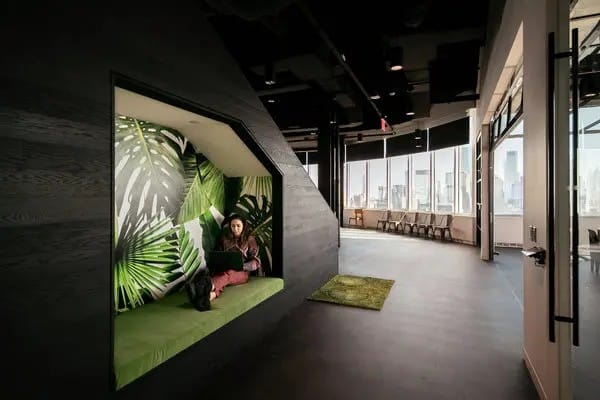

In environmental planning, a quiet zone is a designated geographical area where background noise levels are strictly monitored and kept below specific decibel thresholds. These zones protect urban sanctuaries, residential neighborhoods, and natural habitats from pervasive traffic, industrial, and mechanical noise.
Protects spaces around hospitals, schools, and city parks to lower community stress and prevent long-term noise annoyance.
Preserves natural soundscapes within green corridors so local wildlife can communicate, navigate, and survive without acoustic interference.

Lowering background environmental noise has direct benefits for both human health and urban community well-being. By maintaining designated quiet zones, city planners can reduce chronic environmental stressors that negatively impact the body and mind.

Reducing night-time traffic noise helps prevent sudden sleep disruptions, allowing for deeper rest cycles and better daytime energy levels.
Quiet environments near schools and residential areas help children focus, improve reading comprehension, and lower learning distractions.
Spending time in areas free from engine and mechanical noises helps lower blood pressure and allows the body's nervous system to rest.
Protecting an urban quiet zone is an ongoing management challenge. Sound waves do not stop at property lines, meaning that city planners must constantly adapt to new noise sources leaking in from surrounding commercial districts.
Weather conditions also complicate noise management. Wind direction, air temperature, and daily humidity levels change how far sound travels through the air, causing quiet zone boundaries to experience shifting noise levels throughout the year.
Successfully addressing these challenges requires long-term cooperation between zoning boards, transit authorities, and local property developers to ensure noise-mitigation strategies remain effective over time.
To qualify as a verified quiet zone, an area must not exceed a day-evening-night average sound level of 45 decibels. This clear metric is designed to eliminate sleep disturbance, lower physiological stress, and provide a stable baseline environment where natural soundscapes take precedence over mechanical noise.
Peak noise events, such as passing heavy vehicles or low-altitude flights, are logged separately by processing units. These transient anomalies are mathematically isolated to ensure occasional short disruptions do not distort the long-term ambient baseline calculations.
By keeping continuous background sounds beneath these exact targets, municipal parks and residential green spaces can successfully protect vulnerable avian populations that rely entirely on acoustic clarity for daily communication and survival.
Maintaining low decibel levels requires structured perimeter defenses. Passive interventions involve laying porous asphalt mixes on adjacent roadways to reduce tire friction sound waves alongside constructing multi-layered earthen berms lined with dense evergreen canopies.
These physical barriers act as scattering mechanisms for sound propagation. Instead of allowing high-energy commercial traffic waves to penetrate deep into public green spaces, the architectural angles bounce and absorb sound energy at the outer boundaries.
Additional internal zoning controls ensure that any nearby mechanical installations, including HVAC systems or electrical transformers, utilize localized acoustic enclosures to prevent sound leaking into the core conservation perimeter.
Cities check noise levels using tools called sound level meters. These devices measure how loud an area is in decibels to make sure it stays within safe and healthy limits.
Measurements are taken near busy roads, local parks, and houses at different times of the day and night. Residents can also report loud sounds directly to city workers if a neighborhood becomes too noisy.
This information helps city leaders see exactly which areas have noise problems. They use these real measurements to update local rules, change truck routes, or plan new parks.